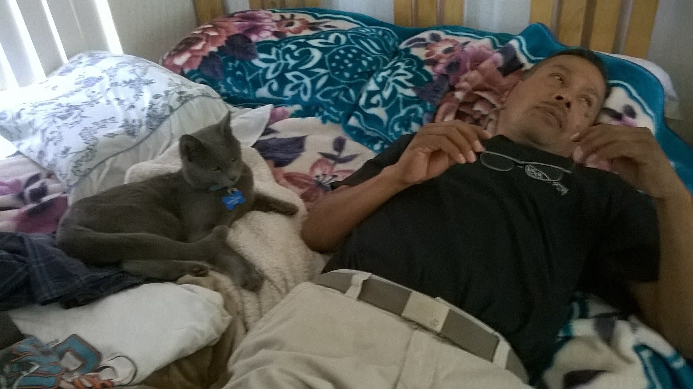
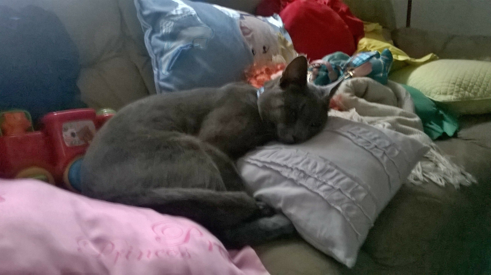
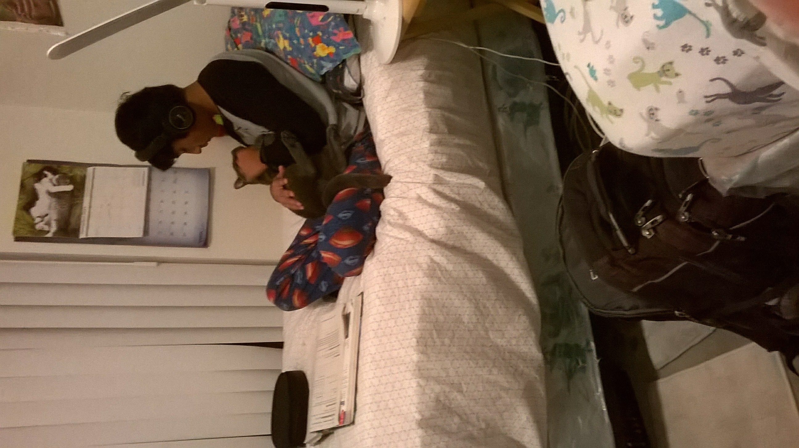
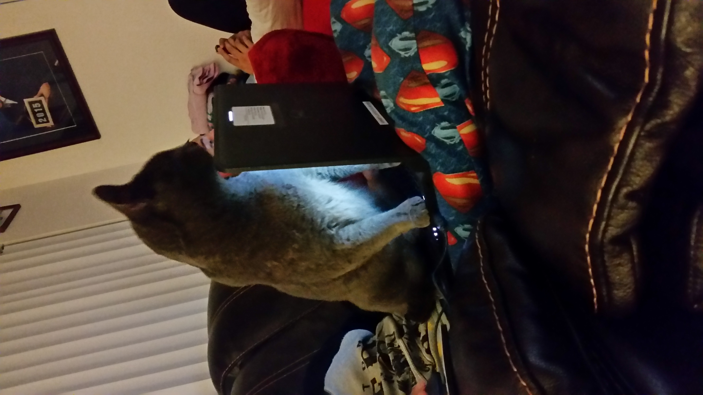
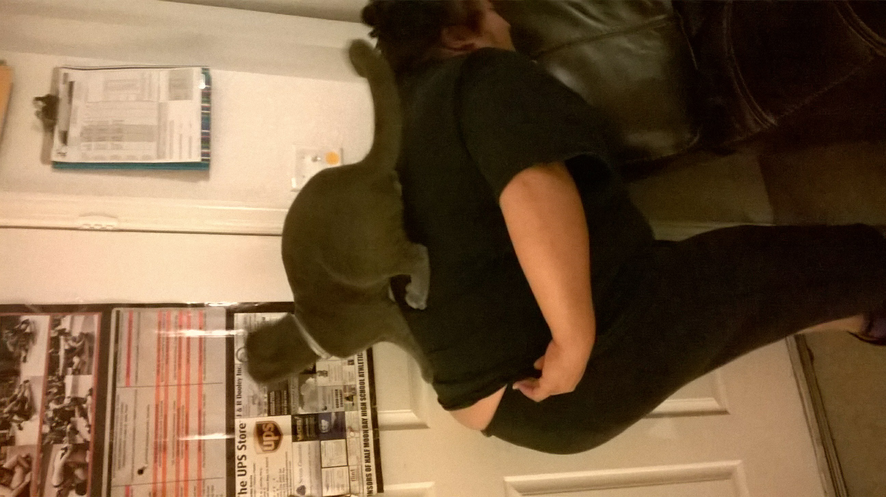

Look! No more milk teeth, my bite really hurts now. And I like to play with my teeth, I guess you can say I'm a teenager now.
 I take longer naps now because, umm, well, teenagers need their beauty sleep. That's what my mom tells me
This guy's hair is kinda long and not very well-combed, but he's alright
 Here I am doing some of my favorite teenage passtimes. Helping the humans with their technology.Look over to the right and you will see me climbing Melon's back.